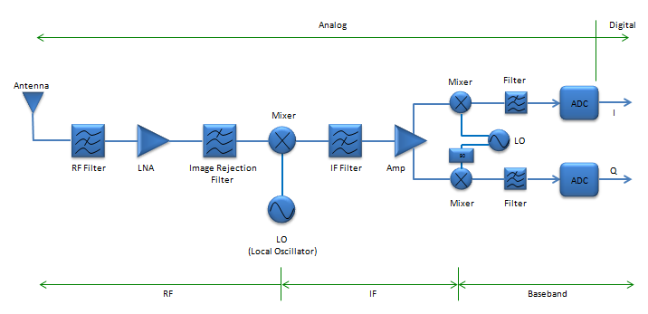
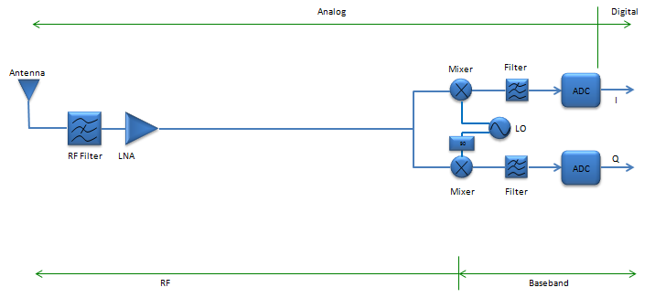
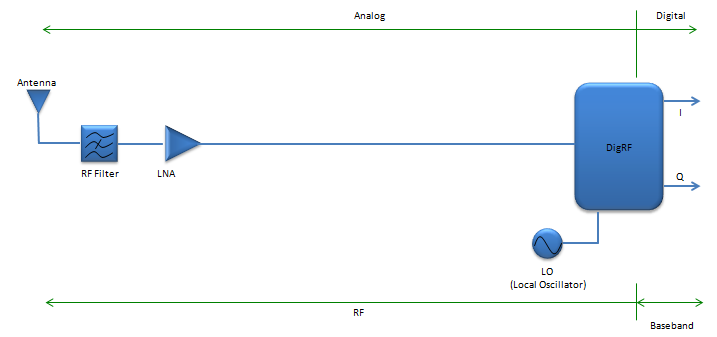

|
RF - Introduction Home : www.sharetechnote.com |
|
What is RF ? It stands for Radio Frequency ? Then what is the Radio Frequency. Simple Definition from Wikipedia says as follows.
Radio frequency (RF) is a rate of oscillation in the range of about 3 kHz to 300 GHz, which corresponds to the frequency of radio waves, and the alternating currents which carry radio signals
Just in terms of concept, it may seem pretty simple, because most of RF system is made up of very similar conceptual blocks as shown below. The ideal operation of each components are very simple as described below.
Sounds simple ? yes, it may sound simple.. but in reality most of RF compononents are not only a technology but also an arts. The reason why this needs to art is as follows :
As any other form of art, it may take whole of your life to make it mature and satisfactory and it can never be achieved only by logics and theories. It would need a lot of creativity and never ending repetition of do-redo process.
My pages on RF would start with very beginner's level mostly for those who just started in this area and most of the contents will start with big pictures and overall concepts. It will take at least one or two years to improve these to the level which would help those who is working in this area as a serious engineer.
Before I go into the details of each RF components and subjects, let's briefly review the typical RF system and evolution of the system. The three illustrations shown here is showing 'Reciever' path, but 'Transmitter' path is also very similar if you just replace 'LNA' part with PA (Power Amplifier) and change the direction of arrows.
Type 1 : Super heterodyne structure. I think this is still the most common architecture of RF system and it uses most of RF components we can think of. Basically there are three major sections in this system, RF-IF-Baseband. The existence of IF section is the main characteristics of Super Heterodyne structure. Even though this architecture is very complicated and you may need a lot of tunings for each of the components, you may get the best quality of signals. Most of the system which have to handle high power/high frequency or which have to achieve very high quality signal, e.g, base station or RF test equipments still use this architecture. As far as I remember, most of the mobile phone used this architecture even untile 5~6 years ago (around 2007) 
Type 2 : Homodyne (Direct Conversion). Second type of the architecture is the one without IF section. It means that the signal get converted directly from RF to baseband and baseband to RF. That's why it is called 'Direct Conversion'. There used to be technical issues (e.g, DC offset or noise removal) and it is hard to do direct conversion when the RF frequency is very high. But the benefit for this system would be obvious. Less component, less cost and probably/hopefully less trouble for tuning components. Now technology has been improved and mature enough to make practical use of this architecture in some area. As far as I know, most of the mobile phone we see in the market now (2013 as of now) would use this kind of architecture.

Type 3 : DigRF. This architecture would be the most recent and advanced form. The basic idea would be to simplify the RF system even simpler (comparing to type 1 and 2) by putting most of RF components into a single RF IC chip and communicate directly with the baseband chipset. The DigRF chipset has two different type of interfaces. On one side, there is interface which transmit and receive RF signal and on the other side there is interface which send and receive baseband signal. This architecture is not very widely accepted, but it has been used for a couple of years in some mobile phone and it is getting wider and wider ground as mobile phone technology evolves (e.g, from GSM/CDMA to UMTS and from UMTS to LTE.)

If you are interested in further details DigRF, refer to following links.
|